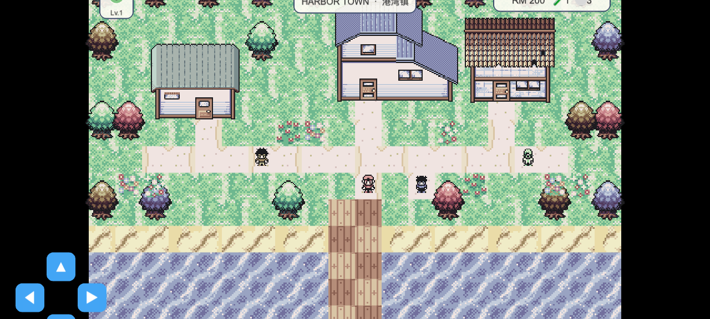

The party card is clipped and underspecified
Its 66px height is centered at y=288, so the top reaches y=321 on a 640px design canvas. The icon and level show neither name, HP, active state, nor why the player should look here.
PokeMath UI research · 18 July 2026
The current top corners behave like a dashboard, while the game world wants to feel like an adventure. Comparable creature games keep peaceful exploration quiet and reveal status only when it affects the next action.
The screenshot and source agree: three floating panels compete across the same top edge without sharing a hierarchy.

1 2 3Its 66px height is centered at y=288, so the top reaches y=321 on a 640px design canvas. The icon and level show neither name, HP, active state, nor why the player should look here.
Town identity, party identity, and resources all receive the same cream pill treatment. Nothing reads as primary, contextual, or temporary.
RM, potion, and ball counts are flattened into one line using operating-system emoji. It clashes with the pixel art and consumes attention even when walking requires none of those values.
The useful distinction is not franchise versus indie. It is peaceful exploration versus action where status changes every turn.
| Reference | Exploration HUD | Party treatment | Money and inventory | Lesson for PokeMath |
|---|---|---|---|---|
| Pokémon: Let’s Go | Peaceful routes are almost entirely world-first. Location appears as a temporary banner, not a permanent card. | The partner is embodied in the world and receives the largest visual role in the main menu. Party is a separate, clearly labelled destination. | Bag uses individual item icons and counts. Money appears inside the Bag screen where it belongs. | PokeMath targets children too. Preserve the world view; make the pet a character before making it a statistic. |
| Pokémon Mystery Dungeon DX | Dungeons carry more HUD because movement and combat share the same space. | Active Pokémon gets portrait, level, and full HP; the follower is a smaller secondary row. | Only action-relevant information stays visible. | If PokeMath later adds dangerous roaming zones, a richer status stack is justified there, not in Harbor Town. |
| Temtem | Official overworld screenshots stay quiet, even in populated social areas. The scene, creatures, and nearby interaction markers lead. | Companions and other players exist in the world rather than as a permanent roster strip. | No persistent currency or inventory strip in the showcased overworld. | A creature-collection game can feel rich without displaying every owned resource while walking. |
Show a value when it helps the player choose the next action. Ownership alone is not a reason to pin it to the world.
A larger pet portrait, name, and state communicate attachment. Six tiny level dots communicate bookkeeping.
Use pixel-art bag, potion, and ball sprites. Avoid platform emoji, whose rendering and weight change by device.
This keeps touch access, pet attachment, and bilingual place identity without turning the world into a status dashboard.
Top left: active pet only. Top right: one Bag button. Town name fades after arrival. No money or item counts.
Bag: RM in the header, then proper item sprites and counts. Shop: wallet stays visible beside prices because every action changes money.
Pet status: full name, level, and HP. Items: reveal counts inside the item action tray, not before the player chooses Bag.
The first pass is small and immediately fixes the imbalance. The second pass creates the Pokémon-like emotional payoff.
Research scope: live PokeMath build and source inspection, official Pokémon and Temtem material, and UI screenshot archives. This report proposes direction only; it does not modify game code.